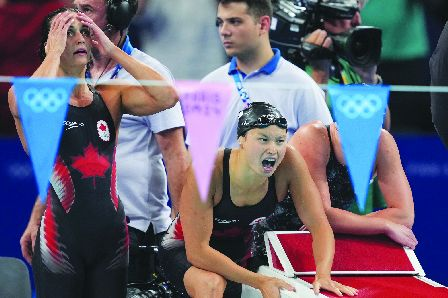

加拿大选手Kylie Masse、Maggie MacNeil和Sophie Angus（左至右）在女子4乘100米混合泳接力决赛中为队友麦金托打气。（加新社）
加拿大选手德格拉斯（Andre De Grasse）在奥运男子100米田径准决赛中，未能晋级。
德格拉斯本赛季最佳成绩为9.98秒，但这个成绩不足以让他晋级。他在半决赛中排名第五，总体排名第12。
比赛后，德格拉斯说：「这是一次艰难的比赛。我觉得我还有很多潜力，但今天没能展现出来。这是比赛的一部分。
「我很感激能够在这里，这是我第三次参加奥运会。这对我来说是梦想成真，说实话，我从未想过我能到这里。我很高兴能够参与其中。我现在要保持头脑清醒，准备好参加200米比赛。」
美国选手莱尔斯（Noah Lyles）最后以0.005秒之差赢得100米飞人比赛。由于他与牙买加选手汤普森（Kishane Thompson）几乎同一时间冲刺，莱尔斯要等待了大约30秒才得知自己摘冠。
当莱尔斯和汤普森冲过终点线后，记分板上出现「照片」字样。莱尔斯在跑道上徘徊，双手抱头。最终，成绩出来了。莱尔斯以9.784秒的成绩获胜，以五千分之一秒的优势击败汤普森。
美国选手克利（Fred Kerley）则以9.81秒获得第三名。前七名选手的成绩都在0.09秒之内。
这是自1980年莫斯科奥运会以来，甚至可能是有史以来冠亚军最接近的100米比赛。当年，英国选手威尔斯（Allan Wells）以微弱优势击败伦纳德（Silvio Leonard），在那个年代，电子计时器并没有精确到千分之一秒。